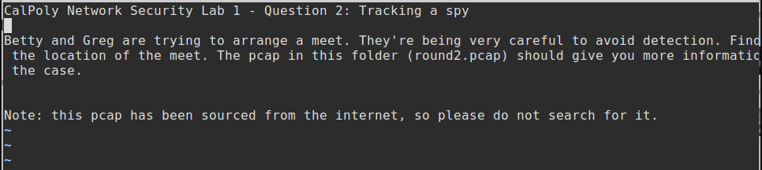

This week was more information driven than the previous week, covering a wide range of topics on network security, protection strategies, and some of the kinds of threats that can be encountered.
Positive policy:
Positive policy, sometimes referred to as whitelisting, is a defensive policy where there is a set of allowed things in a network, and anything that is not whitelisted is determined to be suspicious and blocked. This gives the defender the advantage as the defender knows what every part of the network is for, and the attacker, who has not been allowed to get in to do reconnaissance, does not. This means the attacker has to essentially guess at the internal conventions and choices. The major downsides to this are that it does not specify what kind of threat, only that there was suspicious activity detected, and this policy has a higher chance of accidentally blocking non-hostile actions that weren’t whitelisted.
Firewalls / Security Zones:
A security zone is any “zone” that you are looking to protect, like a data center, intranet, extranet, etc. A firewall is a device that filters the traffic between the security zones and the outside or other security zones. The firewall can use other policies, like the previously mentioned whitelisting, to try and filter out possible threats.
Defense in Depth:
Defense in Depth is not a specific type of technology, instead it is a policy for how other defensive technologies should be used. Specifically, defense in depth assumes that any security measure could and probably will fail, and the security measures and policies should be layered so that every aspect of a system has some form of security tailored to the threats likely to reach it.
Intrusion Detection:
Intrusion Detection uses a combination of signatures of known threats and behavior analysis to detect attacks. Unlike a firewall, which denies anything that is not allowed, by watching for suspicious actions Intrusion Detection allows us to see information about the possible attack being used. The biggest issue with Intrusion Detection is that it can only stop known threats.
Honeynets / Intrusion Deception:
A less common strategy than most, a Honeynet is the creation of a false network that is less secure and/or appears to be a high value target, attackers who deploy against it are then slowed down by other features of the net like sucker algorithms (literally slow down the process to slow down the attacker) while the attack is safely analyzed.
Quarantine:
The other half of a firewall is blacklisting, where specific things are disallowed regardless of the actions involved. When suspicious activity is discovered on a network that entire network can be blacklisted, making it impossible for your network to interact with it if it is external, and making it impossible for it to interact with the outside if it is an internal network. This is usually done if a network is discovered to be compromised.
Reputation:
Reputation is a big data solution to security, with all information about threats such as IP addresses, URLs, files, etc., stored on the cloud and referenced to prevent threats. The issues that arise however are the dangers of “Zero Day” threats, or new forms of intrusion that have not been used previously and, as such, are not on the cloud.
Man-in-the-Middle Attacks
A MITM attack is where data transmissions/messages are intercepted by a 3rd party and then changed in some way before being delivered. This can take a number of forms both positive and negative. The negative examples include ARP Poisoning (where you flood the network with APR responses) and TCP Hijacking (where you manipulate the datastream byu changing/deleting contents). Positive examples include killing TCP proxies, creating a mail proxy to look for sensitive data within emails, and creating a HTTP proxy to monitor traffic.
Hidden Data Transmissions
Hidden Data Transmissions are usually very low bandwidth to help decrease their detectability, and work by leveraging channels to transmit information that weren’t intended to do so. These transmissions can include TCP ISNs, Ack sequence numbers, IP ID, TCP reXmit patterns.
Reconnaissance
Reconnaissance is the aforementioned key to getting around firewalls. The attacker will want to gain more information about vulnerable machines on the network and the addresses for services that can be attacked/leveraged. This is referred to as active reconnaissance, passive reconnaissance is where the attacker is already able to see data on the network or is trying to learn about the primary users.
More on Active Reconnaissance:
The basic tool used is called “scanning” where the attacker tries to connect to as many hosts/ports as it can find with the goal or gaining the IP address and UDP/TCP port of a vulnerable service. Scanning is used both by black hat hackers to attack a system and by white hat hackers to point out the vulnerabilities to the provider.
More on Passive Reconnaissance:
Passive reconnaissance is generally illegal, and involves some kind of infiltration, such as tapping the ISPs, hiding hardware in wiring closets, listening to radio signals, and more. From there activity can be directly analysed to see what user is connecting to what service on the network.
Spoofing
Spoofing the admittedly silly sounding name for when an user/attacker disguises themself as a different network entity to gain an advantage over the network defences. This can have legitimate uses, such as when performing load testing for a large number of users. There is a wide range of things that can be spoofed, like TCP sequence numbers, IP addresses, MAC addresses, E-mail addresses, HTTP fields, etc. Fortunately most networks can perform some basic checks to detect spoofing.
Resource Consumption Attacks
Resource Consumption Attacks are fairly well known in the form of DoS (Denial of Service) and DDoS (Distributed DoS), which focus on simply using up as many network resources as possible, slowing the service down or even making it completely unusable. This is countered with traffic scrubbing centers, where traffic is analyzed and ideally only legitimate traffic is let through, although it isn't perfect.
Bugs and Backdoors
Keeping this one brief as it has been discussed at length in previous weeks and was a shorter topic in this week's lecture, bugs and backdoors refer to any ingrained security flaw that can be exploited, including default built-in passwords, protocol design bugs, and ancient spaghetti sometimes referred to as “legacy code” that is inexplicably still running.
Network Security Homework:
Instead of red and green, i will be using italics and bold respectively.
At every layer of the protocols, there is a general rule whose application can lead to enormous benefits in robustness and interoperability [ref to rfc760, 1980]: “Be liberal in what you accept, and conservative in what you send” Software should be written to deal with every conceivable error, no matter how unlikely; sooner or later a packet will come in with that particular combination of errors and attributes, and unless the software is prepared, chaos can ensue.
Being “liberal in what you accept” would cause the firewall to be ineffective, a firewall is useful because it is selective in what is allowed can err on the side of caution. In addition to it being impossible to conceive of every possible error, it is also a huge waste of resources that could be better spent on defence in depth instead of one “perfect” line of defense. It would be better to have a catch-all for any errors you don't absolutely need to handle with care.
In general, it is best to assume that the network is filled with malevolent entities that will send in packets designed to have the worst possible effect.
The internet is a more hostile, attacker filled space than ever before, so this seems like a safe assumption.
This assumption will lead to suitable protective design, although the most serious problems in the Internet have been caused by unenvisaged mechanisms triggered by low-probability events; mere human malice would never have taken so devious a course!
The majority of threats to a system these days are not accidents or “unenvisaged mechanisms triggered by low-probability events”, good programing etiquette has done a good job of reducing these, but as mentioned before the number of hostile entities looking to take advantage of any network or system has increased dramatically.
Adaptability to change must be designed into all levels of Internet host software. As a simple example, consider a protocol specification that contains an enumeration of values for a particular header field—e.g., a type field, a port number, or an error code; this enumeration must be assumed to be incomplete. Thus, if a protocol specification defines four possible error codes, the software must not break when a fifth code shows up. An undefined code might be logged (see below), but it must not cause a failure. The second part of the principle is almost as important: software on other hosts may contain deficiencies that make it unwise to exploit legal but obscure protocol features. It is unwise to stray far from the obvious and simple, lest untoward effects result elsewhere. A corollary of this is “watch out for misbehaving hosts”; host software should be prepared, not just to survive other misbehaving hosts, but also to cooperate to limit the amount of disruption such hosts can cause to the shared communication facility.
A program that is adaptable is one that is ready to meet the ever changing landscape of threats and needs, the system needs to be robust enough to not break once it encounters some undefined behavior or code, and cooperation with users is critical to deal with misbehaving hosts that might be simply ignorantly misbehaving. Overall I would say this holds well.
Firewall Policy Homework:
Wireshark Lab:
For this lab we had to use wireshark captures and truecrypt files to answer a couple of questions. The first was to find about a meeting of a suspected spy.
From there we can find the encrypted messages through wireshark:
After we export the text file, we can use “decode” on it to get access to the message:
The 2nd question was about finding the location of their meeting:

Looking in wireshark an unusual port number, 1024, stands out.
Following the TCP stream and extracting it gives us the encrypted file that we can unlock using truecrypt.
To unencrypt it we need a password, so over in Wireshark we can search for the string password, which gives us S3cr3 tVV34p0n
The meeting is in Las Vegas!
Overall This was a really interesting week, and I enjoyed learning about the different kinds of network threats that can be encountered and the various protection strategies. The labs we harder than previous ones, and I feel like the combination of shorter than normal instruction/demonstration sections in the lecture videos and the lack of the lab environment (where students can quickly and efficiently get assistance or clarification from each other and the instructor) contributed to this. An additional video covering the setup process for this lab might be helpful for future iterations.